사회조사분석사-2급 (2016-03-06 기출문제)
1과목: 조사방법론 I
1. 다음 중 질문지의 개별문항으로 가장 적합한 것은?
- 당신의 월수입은 얼마나 됩니까?
- 당신은 올해 X-ray 검진을 받은 적이 있습니까?
- 당신은 극장에 가끔 가십니까 아니면 규칙적으로 가십니까?
- 당신은 당신 회사의 구내식당에 대해 만족합니까 아니면 불만입니까?
(정답률: 75%)

2. 관찰시기와 행동발생의 일치여부를 기준으로 관찰방법을 분류한 것은?
- 자연적 관찰과 인위적 관찰
- 공개적 관찰과 비공개적 관찰
- 체계적 관찰과 비체계적 관찰
- 직접관찰과 간접관찰
(정답률: 67%)
3. 질문지를 작성하는데 요구되는 일반적인 원칙과 가장 거리가 먼 것은?
- 간결성
- 명확성
- 가치중립성
- 규범성
(정답률: 75%)
4. 기술적 조사의 연구문제로 적합하지 않은 것은?
- 대도시 인구의 연령별 분포는 어떠한가
- 아동복지법 개정에 찬성하는 사람의 비율은 얼마인가
- 어느 도시의 도로확충이 가장 시급한가
- 가족 내 영유아 수와 의료지출은 어떤 관계를 가지는가
(정답률: 50%)
5. 실험실내(laboratory) 실험방법과 비교하여 현지(field) 실험방법이 가지는 장점은?
- 내적타당성(internal validity)
- 외적타당성(external validity)
- 개념타당성(construct validity)
- 신뢰성(reliability)
(정답률: 56%)
6. 다음은 과학적 조사의 어떤 특징과 가장 가까운가?
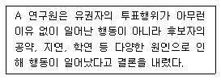
- 간결성
- 상호주관성
- 인과성
- 수정가능성
(정답률: 81%)
7. 다음 중 전화조사가 가장 적합한 경우는?
- 어떤 시점에 순간적으로 무엇을 하며, 무슨 생각을 하는가를 알아내기 위한 조사
- 자세하고 심층적인 정보를 얻기 위한 조사
- 저렴한 가격으로 면접자 편의를 줄일 수 있으며 대답하는 요령도 동시에 자세히 알려줄 수 있는 조사
- 넓은 범위의 지리적인 영역을 조사대상지역으로 하여 비교적 복잡한 정보를 얻으면서, 경비를 절약할 수 있는 조사
(정답률: 66%)
8. 연구에서 관찰은 단 한 번에 이루어지기도 하며 경우에 따라서는 강당 기간동안 이루어지기도 한다. 다음 중 시간적 범위가 다른 것은?
- 추이연구(trend study)
- 패널연구(panel study)
- 코호트연구(cohort study)
- 횡단연구(cross-sectional study)
(정답률: 78%)
9. 다음 연구의 진행에 있어 내적타당성을 위협하는 요인이 아닌 것은?
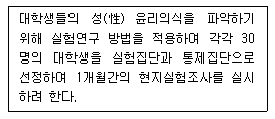
- 검사의 상호작용 효과(interation testing effect)
- 우연적 사건(history)
- 실험변수의 확산 또는 모방(diffusion or imitation of treatments)
- 측정수단의 변화(instrumentation)
(정답률: 32%)
10. 통계적 회귀(statistical regression)에 관한 설명으로 옳은 것은?
- 수집된 자료가 어느 특정 선을 중심으로 분표하는 현상이다.
- 자료분석을 했을 경우 종속변수가 주요 독립변수의 변화에 따라 함께 변화하는 현상이다.
- 타당도 높은 연구에서는 수집된 자료가 광범위하게 분포되지 않고 응집력을 갖춘 회귀성을 나타내야 한다는 것이다.
- 사전측정에서 극단적인 점수를 얻은 경우에 사후측정에서 독립변수의 효과에 관계없이 평균치로 값이 근접하려는 경향이다.
(정답률: 74%)
11. 설문지 질문항목의 배열에 관한 설명으로 틀린 것은?
- 응답하기 쉬운 문항일수록 설문지의 앞에 배치하는 것이 좋다.
- 응답자의 인적사항에 대한 질문은 가능한 한 나중에 한다.
- 질문항목간의 관계를 고려하여 연상작용을 일으켜 응답에 영향을 미칠 수 있는 질문들은 멀리 배치한다.
- 문항이 담고 있는 내용의 범위가 좁은 것에서부터 점차 넓어지도록 배열하는 것이 좋다.
(정답률: 76%)
12. 사전검사(pretest)에 대한 설명으로 틀린 것은?
- 본 조사에서 사용하고자 하는 방법과 동일하게 한다.
- 응답대상자는 반드시 대표성을 가져야 한다.
- 질문들이 갖는 문제점을 찾아내어 명료하게 수정하기 위한 목적으로 행한다.
- 반드시 많은 수의 응답자를 상대로 실시할 필요는 없다.
(정답률: 71%)
13. 동시경험집단을 연구하는 것으로 일정한 기간 동안에 어떤 한정된 부분의 모집단을 연구하는 것은?
- 추세연구(trend study)
- 코호트연구(cohort study)
- 패널연구(panel study)
- 사례연구(case study)
(정답률: 62%)
14. 일반적인 과학적 연구 과정의 단계를 바르게 나열한 것은?
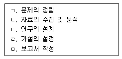
- ㄱ→ㄴ→ㄷ→ㄹ→ㅁ
- ㄱ→ㄹ→ㄷ→ㄴ→ㅁ
- ㄷ→ㄱ→ㄹ→ㄴ→ㅁ
- ㄷ→ㄹ→ㄱ→ㄴ→ㅁ
(정답률: 79%)
15. 다음 사례에 가장 적합한 연구방법은?
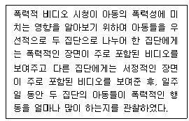
- 설문조사법
- 실험법
- 사례연구법
- 내용연구법
(정답률: 82%)
16. 다음 자료수집방법 중 조사자의 특정에 따른 영향이 가장 적은 것은?
- 면접조사
- 전화조사
- 우편조사
- 집단조사
(정답률: 75%)
17. 면접조사 시 조사자가 유의해야 할 사항과 가장 거리가 먼 것은?
- 응답자와 친숙한 분위기(rapport)를 형성해야 한다.
- 조사에 임하기 전에 스스로 질문내용에 대해 숙지하고 있어야 한다.
- 가급적이면 응답자가 이질감을 느끼지 않도록 복장이나 언어사용에 유의하여야 한다.
- 응답내용은 조사자가 해석하여 요약ㆍ정리해 두는 것이 바람직하다.
(정답률: 82%)
18. 조사연구의 목적과 그 예가 틀리게 짝지어진 것은?(오류 신고가 접수된 문제입니다. 반드시 정답과 해설을 확인하시기 바랍니다.)
- 설명(explanation) - 시민들이 왜 담배값 인상에 반대하는지 파악하고자 하는 연구
- 평가(evaluation) - 현재의 공공의료 정책이 1인당 국민 의료비를 증가시켰는지에 대한 연구
- 기술(description) - 유권자들의 대선후보지지율 조사
- 탐색(exploration) - 단일사례설계를 통하여 개입의 효과를 검증하려는 연구
(정답률: 55%)
19. 다음 중 조사대상에 대한 사전정보가 거의 없는 상태에서 탐색적인 연구를 위해 이용될 수 있는 가장 유용한 자료수집 방법은?
- 우편조사
- 전화면접조사
- 구조화된 대면적 면접조사
- 델파이 조사
(정답률: 50%)
20. 과학적 연구방법의 기본과정에 관한 설명으로 틀린 것은?
- 불완전한 진리는 공격받으므로, 과학적으로 연구된 진리는 절대적이다.
- 경험과 관찰은 객관적 현상에 대한 타당한 추론으로써 지식의 원천이다.
- 자명한 지식은 없으며, 과학적으로 검증되어야 한다.
- 과학적 설명은 확률조건인과모형의 관점에서 이루어진다.
(정답률: 79%)
21. 귀납법과 연역법에 관한 설명으로 옳은 것은?
- 귀납법과 연역법은 상호보완적으로 사용될 수 없다.
- 연역법은 일정한 가설을 설정하기 이전에 필요한 자료를 수집하고 여기서 가설을 구성하는 방법이다.
- 귀납법은 현실의 경험세계에서 출발하고 연역법은 가설이나 명제의 세계에서 출발한다.
- 연역법은 이론을 형성하기 위한 방법이며 귀납법은 일정한 가설을 먼저 설정한 후 이에 필요한 자료를 구하는 방법이다.
(정답률: 74%)
22. 다음 중 가설로 가장 적합한 것은?
- 사람은 남자이거나 여자이다.
- 철수는 지금 서울에 있으면서 부산에 있다.
- 방범대원의 수를 늘리면 도난사고가 줄어든다.
- 부유한 사람들은 많이 배운 사람들이다.
(정답률: 83%)
23. 분석단위의 혼란에서 오는 오류 중 개인의 특성에 관한 자료로부터 집단의 특정을 도출할 경우 발생하기 쉬운 오류는?
- 생태학적 오류
- 개인주의적 오류
- 비표본 오차
- 체계적 오류
(정답률: 78%)
24. 참여관찰(participant observation)에 대한 설명으로 틀린 것은?
- 연구 설계 및 착수가 용이하다.
- 연구의 설계과정에서 융통성이 높다.
- 직접 참여해서 현상을 관찰 ㆍ기술하는 방법이다.
- 양적자료이기 때문에 대규모 모집단에 대한 기술이 쉽다.
(정답률: 80%)
25. 다음 중 표준화면접의 사용이 가장 적합한 경우는?
- 새로운 사실을 발견하고자 할 때
- 정확하고 체계적인 자료를 얻고자 할 때
- 피면접자로 하여금 자유연상을 하게 할 때
- 보다 융통성 있는 면접분위기를 유도하고자 할 때
(정답률: 78%)
26. 연구자가 검정요인(test factor)을 연구에 도입하는 가장 큰 이유는?
- 인과성의 확인
- 측정의 타당도 향상
- 측정의 신뢰도 향상
- 일반화 가능성의 증대
(정답률: 38%)
27. 순수실험설계(true experimental design)의 특징이 아닌 것은?
- 비동질 통제집단의 설정
- 실험집단과 통제집단에 대한 무작위 할당
- 독립변수의 조작
- 외생변수의 통제
(정답률: 66%)
28. 초점집단(focus group) 조사에 관한 설명으로 옳은 것은?
- 초점집단 조사는 내용타당도를 높이는 목적으로 사용될 수 있다.
- 초점집단 조사의 자료수집 과정에서는 연구자의 주관적 개입이 불가능 하다.
- 초점집단 조사에서는 익명 집단의 상호작용을 통해 도출된 자료를 분석하다.
- 조사결과가 체계적이기 때문에 결과의 분석과 해석이 용이하다.
(정답률: 58%)
29. 다음 중 집단조사의 단점과 가장 거리가 먼 것은?
- 피조사자를 한 장소에 모으는 것이 쉽지 않은 경우가 있다.
- 집단상황이 응답을 왜곡시킬 가능성이 있다.
- 피조사자의 수준이 동일하다고 가정하는 오류를 범할 수 있다.
- 응답의 누락이 많다.
(정답률: 79%)
30. 개념의 조작화 과정에 관한 설명으로 옳은 것은?
- 조작적 정의는 개념에 대한 사전적 정의이다.
- 조작적 정의, 명목적 정의, 측정의 순서로 이루어진다.
- 변수를 조작적으로 정의하는 방법은 한정되어 있다.
- 조작화 과정의 최종 산물은 수량화이다.
(정답률: 70%)
2과목: 조사방법론 II
31. 하나의 개념을 측정하기 위한 측정도구에 다수의 문항을 포함시키는 목적과 가장 거리가 먼 것은?
- 측정의 신뢰도를 높여준다.
- 측정의 타당도를 높여 준다.
- 복합적 개념을 측정 가능하게 한다.
- 추상적 개념을 수량화할 수 있다.
(정답률: 45%)
32. 표본추출의 대표성에 관한 설명으로 틀린 것은?
- 대표성의 문제란 표본이 모집단을 대표하여 일반화가 가능한 것인가의 문제이다.
- 표본추출에는 우연성이 많아야 대표성이 확보된다.
- 표본은 모집단과 변수의 특성이 유사한 분포를 갖도록 추출되어야 한다.
- 조사에 있어 어떤 것이 중요한 가설인가에 따라 대표성이 달라진다.
(정답률: 63%)
33. 척도를 구성하는 과정에서 질문 문항들이 단일차원을 이루는지를 검증할 수 있는 척도는?
- 의미분화척도(semantic differential scale)
- 서스톤척도(thurston scale)
- 리커트척도(likert scale)
- 거트만척도(guttman scale)
(정답률: 39%)
34. 도박중독자의 심리적 상태를 파악하기 위해 처음 알게 된 도박중독자로부터 다른 대상을 소개받고, 다시 소개받은 대상으로부터 제3의 대상자를 소개받는 절차로 이루어지는 표본추출방법은?
- 유의표집(purposive sampling)
- 집락표집(cluster sampling)
- 눈덩이표집(snowball sampling)
- 비비례적층화표집(disproportionate stratified sampling)
(정답률: 75%)
35. 집락표본추출법에 관한 설명으로 틀린 것은?
- 집락표본추출법에서는 일차적인 표집단위(primary sampling unit)를 개인이 아닌 집락(cluster)으로 주로 구한다.
- 집락표본추출법에서는 집락은 가급적이면 동질적인 요소로 구성되는 게 바람직하다.
- 집락표본추출은 단일단계 집락표본추출법과 다단계 집락표본추출법이 있다.
- 집락표본추출법은 때에 따라서는 단순무작위추출법보다 훨씬 더 경제적이고, 신빙성도 뒤떨어지지 않는다.
(정답률: 64%)
36. 측정항목이 가질 수 있는 모든 조합의 상관관계의 평균값을 산출해 신뢰도를 측정하는 방법은?
- 재검사법(test-retest method)
- 복수양식법(parallel form method)
- 반분법(split-half method)
- 내적일관성법(internal consistency method)
(정답률: 59%)
37. 개념타당성(construct validity) 종류 중 다음 ( )안에 들어갈 내용으로 옳은 것은?
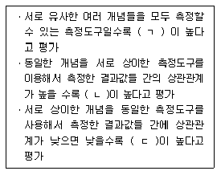
- ㄱ：이해타당성, ㄴ：집중타당성, ㄷ：판별타당성
- ㄱ：집중타당성, ㄴ：판별타당성, ㄷ：이해타당성
- ㄱ：판별타당성, ㄴ：이해타당성, ㄷ：집중타당성
- ㄱ：이해타당성, ㄴ：판별타당성, ㄷ：집중타당성
(정답률: 56%)
38. 층화표본추출방법에 관한 설명으로 틀린 것은?
- 모집단을 특정한 기준에 따라 서로 상이한 소집단으로 나누고 이들 각각의 소집단들로부터 빈도에 따라 적절한 일정수의 표본을 무작위로 추출하는 방법이다.
- 무작위로 표본을 추출할 때보다 표본의 대표성을 높일 수 있는 방법이다.
- 확률표본추출방법 중 가장 많은 시간, 비용, 및 노력을 절약할 수 있다.
- 모집단을 일정한 분류기준에 따라 소집단들로 분류한 후 각 소집단별로 표본을 추출한다는 점에서 할당표본추출방법과 유사하다.
(정답률: 58%)
39. 어느 초등학교 학생을 대상으로 창의성 검사를 실시하였다. 동일한 도구를 활용하여 일주일 간격으로 검사를 실시하였더니 매우 상이한 결과가 나타났다. 이 검사도구의 문제점은?
- 예측성
- 신뢰성
- 타당성
- 정밀성
(정답률: 67%)
40. 각 문항에 대한 전문 평가자들의 의견 일치도가 높은 항목들을 골라서 척도를 구성하는 것은?
- 서스톤척도(thurstion scale)
- 거트만척도(guttman scale)
- 리커트척도(likert scale)
- 의미분화척도(semantic differential scale)
(정답률: 56%)
41. 무작위표집과 비교한 할당표집(quota sampling)의 장점이 아닌 것은?
- 비용이 적게든다.
- 표본오차가 적을 가능성이 높다.
- 신속한 결과를 원할 때 사용가능하다.
- 각 집단을 적절히 대표하게 하는 층화의 효과가 있다.
(정답률: 58%)
42. 질적변수와 양적변수에 관한 설명으로 틀린 것은?
- 질적변수는 속성의 값을 나타내는 수치의 크기가 의미 없는 변수이다.
- 양적변수는 측정한 속성 값을 연산이 가능한 의미 있는 수치로 나타낼 수 있다.
- 양적변수는 이산변수와 연속변수로 구분할 수 있다.
- 몸무게가 80kg 이상인 사람을 1로, 이하인 사람을 0으로 표시하는 것은 질적변수를 양적변수로 변환시킨 것이다.
(정답률: 64%)
43. 서울지역의 전화번호부를 이용하여 최초의 101번째 사례를 임의로 결정한 후 계속 201, 301, 401 번째의 순서로 뽑는 표집방법은?
- 층화표집(stratified sampling)
- 집락표집(cluster sampling)
- 계통표집(systematic sampling)
- 편의표집(convenience sampling)
(정답률: 71%)
44. 어느 대학교 학생들의 환경보호에 대한 여론을 조사하기 위해 그 대학 내 학생 정원 가운데 각 학년별 학생 수를 고려하여 학년별 표본크기를 우선 정하고 표본추줄을 행하였다면 이는 무슨 방법에 의한 것인가?
- 집락표본추출
- 계통표본추출
- 단순무작위표본추출
- 층화표본추출
(정답률: 60%)
45. 표본추출률 또는 표집비율(sampling freation)이란?
- 실험집단의 크기에 대한 통제집단의 크기
- 모집단의 크기에 대한 표본집단의 크기
- 두 개 표본집단간의 동질성을 비교한 것
- 현지실험과 현지조사의 차이를 비교한 것
(정답률: 72%)
46. 표본추출오차와 비표본추출오차에 관한 설명으로 틀린 것은?
- 표본추출오차의 크기는 표본의 크기가 증가함에 따라 감소한다.
- 표본추출오차의 크기는 표본크기의 제곱근에 반비례한다.
- 비표본추출오차는 표본조사와 전수조사에서 모두 발생할 수 있다.
- 전수조사의 경우 비표본추출오차는 없으나 표본추출오차는 상당히 클 수 있다.
(정답률: 66%)
47. 다음 중 척도에 대한 설명으로 틀린 것은?
- 복합적인 자료를 분석하기 위한 단순한 측정치로 요약하기 위해서 척도구성을 한다.
- 연구자는 다양한 문항들이 동일한 차원을 다루는 하나의 척도를 구성하는지 보기 위해 척도법을 사용한다.
- 측정치 또는 측정수준의 오류를 줄이고 그 타당성과 신뢰성을 높이는 하나의 기법이 곧 척도법이다.
- 개별문항들을 집약하지 않고 모두 지표로 인정함으로써 보다 효율적으로 주어진 현상을 측정할 수 있다.
(정답률: 56%)
48. 측정도구의 타당도에 관한 설명으로 틀린 것은?
- 내용타당도(content validity)는 전문가의 판단에 기초한다.
- 구성타당도(construct validity)는 예측타당도(predictive validity)라 한다.
- 동시타당도(concurrent validity)는 신뢰할 수 있는 다른 측정도구와 비교하는 것이다.
- 기준관련 타당도(criterion-related validity)는 내용타당도보다 경험적 검증이 용이하다.
(정답률: 54%)
49. 다음 상황에 가장 적절한 표집방법은?
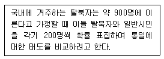
- 가중표집
- 층화표집
- 집락표집
- 단순무작위표집
(정답률: 34%)
50. 다음 중 조작적 정의의 의미로 가장 적합한 것은?
- 변수가 항상 동일한 측정치를 낼 것인가를 미리 살펴보는 것이다.
- 변수가 측정하고자 하는 것을 측정하고 있는지를 밝혀보는 것이다.
- 연구 또는 연구가설에 포함된 변수들이 구체적으로 어떻게 측정될 것인가를 서술하는 것이다.
- 다른 연구에서 사용된 개념을 현재의 연구에서 사용하기 위해 조작하여 다시 정의하는 것이다.
(정답률: 51%)
51. 측정오차(error of measurement)에 관한 설명으로 옳은 것은?
- 체계적 오차(systematic error)의 값은 상호상쇄 되는 경향이 있다.
- 신뢰성은 체계적 오차(sysrematic error)와 관련된 개념이다.
- 타당성은 비체계적 오차(random error)와 관련된 개념이다.
- 비체계적 오차(random error)는 인위적이지 않아 오차의 값이 다양하게 분산되어 있다.
(정답률: 65%)
52. 실제관계가 표면적으로 나타는 관계와는 정반대임을 밝혀주는 검정요인은?
- 외적변수(extraneoust variable)
- 외생변수(exogenous variable)
- 억제변수(suppressor variable)
- 왜곡변수(distorter variable)
(정답률: 65%)
53. 다음에 사용된 표집방법은?
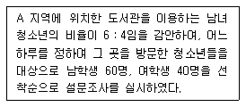
- 단순무작위표집(simple random sampling)
- 계통표집(systematic sampling)
- 층화표집(stratified sampling)
- 할당표집(quota sampling)
(정답률: 58%)
54. 개념적 정의의 특성으로 틀린 것은?
- 정의하려는 대상이 무엇이든 그것만의 특유한 요소나 성질을 적시해야 한다.
- 순환적인 정의가 이루어져야 한다.
- 적극적 혹은 긍정적인 표현을 써야 한다.
- 뜻이 분명해서 누구나 알아들을 수 있는 의미를 공유하는 용어를 써야 한다.
(정답률: 58%)
55. 유권자들이 국회의원의 자질에 대해 어떻게 느끼고 있는가를 알아보기 위해 형용사들을 양극단에 배치하여(예, 신뢰-불신) 측정하는 척도 구성방법은?
- 리커트척도(likert scale)
- Q 분류척도(Q-sort scale)
- 의미분화척도(semantic differential scale)
- 서스톤척도(thurston scale)
(정답률: 71%)
56. 다음 중 비율척도로 측정하기 어려운 것은?
- 각 나라의 평균 기온
- 각 나라의 일인당 평균 소득
- 각 나라의 일인당 교육년수
- 각 나라의 국방 예산
(정답률: 67%)
57. 주로 인종이나 민족, 가족구성원이나 사회집단간의 사회심리적 거리감을 측정하기 위하여 개발된 척도로 사회적 거리척도라고도 하는 것은?
- 서스톤척도(thurston scale)
- 리커트척도(likert scale)
- 보거더스척도(bogardus social distance scale)
- 거트만척도(guttman scale)
(정답률: 73%)
58. 체계적 오류의 주요 발생원인에 해당하는 것은?
- 설문지 문항 수
- 사회적 바람직성
- 복잡한 응답절차
- 응답자의 기분
(정답률: 50%)
59. 다음 중 표본의 크기를 결정하는 요인과 가장 거리가 먼 것은?
- 조사목적
- 조사비용
- 분석기법
- 집단별 통계치의 필요성
(정답률: 28%)
60. 사회조사에서 신뢰도가 높은 자료를 얻기 위한 방법과 가장 거리가 먼 것은?
- 동일한 개념이나 속성을 측정하기 위한 항목이 없어야 한다.
- 누구나 동일하게 이해하도록 측정도구가 되는 항목을 구성한다.
- 면접자들의 면접방식과 태도에 일관성을 유지한다.
- 조사대상자가 잘 모르거나 관심이 없는 내용에 대한 측정을 하지 않는 것이 좋다.
(정답률: 66%)
3과목: 사회통계
61. 표본에 근거한 추정문제에서 추정하고자 하는 모수와 추정량의 기댓값과 차이는?
- 유의수준
- 신뢰구간
- 점추정
- 편의
(정답률: 42%)
62. 어느 조사에서 응답자가 조사에 응답할 확률이 0.4 라고 알려져 있다. 1,000명을 조사할 때, 응답자 수의 기댓값과 분산은?
- 기댓값＝600, 분산＝120
- 기댓값＝600, 분산＝240
- 기댓값＝400, 분산＝120
- 기댓값＝400, 분산＝240
(정답률: 59%)
63. 구분되지 않는 n개의 공을 서로 다른 r개의 항아리에 넣는 방법의 수는? (단, r≤n이고 모든 항아리에는 최소한 1개 이상의 공이 들어가야 한다.)
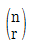
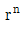
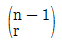
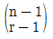
(정답률: 38%)
64. 다음은 보험가입자 30명에 대한 보험가입액을 조사한 자료이다. 보험가입액의 모평균이 1억원이라고 볼 수 있는가를 검정하고자 한다. 이에 대한 t-검정 통계량이 1.201이고, 유의확률이 0.239이었다. 유의수준 5%에서 검정한 결과로 옳은 것은?
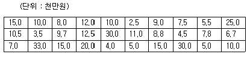
- 유의확률＞유의수준이므로 모평균이 1억원이라는 가설을 기각하지 못한다.
- 유의확률＞유의수준이므로 모평균이 1억원이라는 가설을 기각한다.
- 검정통계량＞유의수준이므로 모평균이 1억원이라는 가설을 기각하지 못한다.
- 검정통계량＞유의수준이므로 모평균이 1억원이라는 가설을 기각한다.
(정답률: 43%)
65. 다음의 검정 중 검정통계량의 분포가 다른 것은?
- 범주형 자료의 독립성 검정
- 범주형 자료의 동질성 검정
- 회귀모형에 대한 유의성 검정
- 단일 모집단에서의 모분산에 대한 검정
(정답률: 38%)
66. 행변수가 M개의 범주를 갖고 열변수가 N개의 범주를 갖는 분할표에서 행변수와 열변수가 서로 독립인지를 검정하고자 한다. (i, j)셀의 관측 도수를 Oij, 귀무가설 하에서의 기대도수의 추정치를
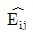
라 할 때, 이 검정을 위한 검정통계량은?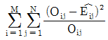
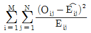
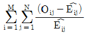
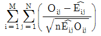
(정답률: 60%)
67. 비대칭도(skewness)에 관한 설명으로 틀린 것은?
- 비대칭도의 값이 1이면 좌우대칭형인 분포를 나타낸다.
- 비대칭도의 부호는 관측 값 분포의 긴 쪽 꼬리방향을 나타낸다.
- 비대칭도는 대칭성 혹은 비대칭성을 나타내는 측도이다.
- 비대칭도의 값이 음수이면 자료의 분포형태가 왼쪽으로 꼬리를 길게 늘어뜨린 모양을 나타낸다.
(정답률: 60%)
68. 다음은 성별과 안경착용 여부를 조사하여 요약한 자료이다. 두 변수의 독립성을 검정하기 위한 카이제곱 통계량의 값은?
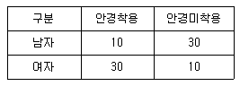
- 40
- 30
- 20
- 10
(정답률: 47%)
69. 크기가 5인 확률표본에 대해
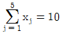
과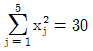
을 얻었다면, 표본변이계수(coefficient of variation)는?- 0.5
- 0.79
- 1.0
- 1.26
(정답률: 30%)
70. 기모평균과 모분산이 각각 μ, σ2인 모집단으로부터 크기 2인 확률표본 X1, X2를 추출하고 이에 근거하여 모평균 μ를 추정하고자 한다. 모평균 μ의 추정량으로 다음의 두 추정량
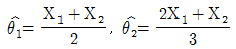
을 고려할 때, 일반적으로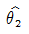
보다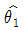
이 선호되는 이유는?- 비편향성
- 유효성
- 일치성
- 충분성
(정답률: 34%)
71. 다음 자료는 새로 개발한 학습방법에 의해 일정기간 교육을 실시하기 전ㆍ후에 시험을 통해 얻은 자료이다. 학습효과가 있는지에 관한 가설검정에 관한 설명으로 틀린 것은? (단,
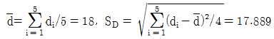
)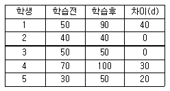
- 가설의 형태는 H0 : μd=0 vs H1 : μd ＞ 0이다.
- 가설 검정에는 자유도가 4인 t분포가 이용된다.
- 검정통계량 값은 2.25이다.
- 조사한 학생의 수가 늘어날수록 귀무가설을 채택할 가능성이 많아진다.
(정답률: 46%)
72. 평균이 μ이고 분산이 16인 정규모집단으로부터 크기 100인 랜덤표본을 추출하여 표본평균
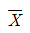
를 얻었다. 귀무가설 H0 : μ=8과 대립가설 H1 : μ =6.416에 대하여 검정할 때 기각역을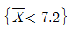
로 둘 때 제2종 오류의 확률은?- 0.⑤
- 0.024
- 0.025
- 0.026
(정답률: 35%)
73. 형광등을 대량 생산하고 있는 공장이 있다. 제품의 평균수명시간을 추정하기 위하여 100개의 형광등을 임의로 추출하여 조사한 결과, 표본으로 추출한 경광등 수명의 평균은 500시간, 그리고 표준편자는 40시간이었다. 모집단의 평균수명에 대한 95% 신뢰구간을 추정하면? (단, Z0.00.025=1.96, Z0.0⑤=2.58)
- (492.16, 510.32)
- (492.16, 507.84)
- (489.68, 507.84)
- (489.68, 510.32)
(정답률: 54%)
74. X가 N(μ, σ2)인 분포를 따를 경우 Y=aX+b의 분포는?
- 중심극한정리에 의하여 표준정규분포 N(0,1)
- a 와 b의 값에 관계 없이 N(μ, σ2
- N(aμ+b, a2σ2+b)
- N(aμ+b, a2σ2)
(정답률: 41%)
75. 선다형 시험문제에서 수험생은 정답을 알거나 추측한다. 수험생이 정답을 알고 있을 확률이 0.6이고 시험문제에서 보기의 수는 5개이다. 수험생이 정답을 맞추었을 때 답을 알고 있었을 확률은?
- 15/17
- 16/17
- 15/18
- 17/18
(정답률: 32%)
76. 검정통계량의 분포로 정규분포를 이용하지 않는 검정은?(보기에 오류가 있는것 같습니다. 정답은 3번입니다. 정확한 3번 4번 보기 내용을 아시는 분께서는 오류신고를 통하여 보기 내용 작성 부탁 드립니다. 정답은 3번입니다.)
- 대표본에서 모평균의 검정
- 대표본에서 두 모비율의 차에 관한 검정
- 모집단이 정규분포인 소표본에서 모분산을 알 때, 모평균의 점정
- 모집단이 정규분포인 소표본에서 모분산을 알 때, 모평균의 검정
(정답률: 57%)
77. 정규분포에 관한 설명으로 옳은 것은?
- 정규분포는 비대칭분포이다.
- 평균(μ)과 표준편차(σ)의 2가지 모수를 갖고 있다.
- 정규분포곡선의 곡선아래 면적은 0.5이다.
- 표준정규확률변수 Z는 －4에서 ＋4까지의 값을 갖는다.
(정답률: 53%)
78. 추정된 최귀선이 주어진 자료에 얼마나 잘 적합되는지를 알아보는 데 사용하는 결정계수를 나타낸 식이 아닌 것은? (단, Yi는 주어진 자료의 값이고,
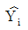
은 추정값이며,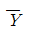
는 자료의 평균이다.)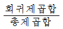
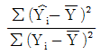
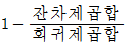
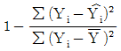
(정답률: 48%)
79. 모평균과 모분산이 각각 μ와 σ2인 모집단으로부터 추출한 크기 n의 임의표본에 근거한 표본평균과 표본분산을 각각  와 S2이라고 할 때 모평균의 구간추정에 대한 설명으로 옳은 것은? (단, za와 t(n,a)는 각각 표준정규분포와 자유도 n인 t분포의 100(1－α)% 백분위수를 나타냄)
와 S2이라고 할 때 모평균의 구간추정에 대한 설명으로 옳은 것은? (단, za와 t(n,a)는 각각 표준정규분포와 자유도 n인 t분포의 100(1－α)% 백분위수를 나타냄)
- 모집단의 확률분포가 정규분포이며 모분산 σ2에 대한 정보를 알고 있는 경우, 모평균 μ에 대한 100(1－α)% 신뢰구간은
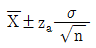
이다.) - 모집단의 확률분포가 정규분포이며 모분산 σ2 값이 미지인 경우, 모평균 μ에 대한 100(1－α)% 신뢰구간은
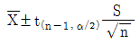
이다. - 정규모집단이 아니며 표본의 크기 n이 충분히 크고 σ2에 대한 정보를 알고 있는 경우, 모평균 μ에 대한 100(1－α)% 근사신뢰구간은
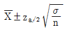
이다. - 정규모집단이 아니며 표본의 크기 n이 충분히 크고 σ2의 값이 미지인 경우, 모평균 μ에 대한 100(1－α)% 근사신뢰구간은
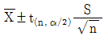
이다.
(정답률: 34%)
80. 다음의 자료로 줄기-잎 그림을 그리고 중앙값을 찾아보려 한다. 빈칸에 들어갈 잎과 중앙값을 순서대로 바르게 나열한 것은?
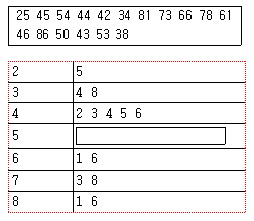
- 0 3, 중앙값＝46
- 0 3 4, 중앙값＝50
- 0 0 3, 중앙값＝50
- 3 4 4, 중앙값＝53
(정답률: 68%)
81. 단순회귀모형의 가정 하에서 최소제곱법에 의해 회귀직선을 추정한 경우, 잔차들의 산포도를 그려봄으로써 검토할 수 없는 것은?
- 회귀직선의 타당성
- 오차항의 등분산성
- 오차항의 독립성
- 추정회귀계수의 불편성
(정답률: 34%)
82. 두 변수 X와 Y 사이의 관계를 알아보기 위하여 평면상의 이차원 자료 (X, Y)를 타점하여 나타낸 그래프는?
- 산점도
- 줄기-잎 그림
- 상자그림
- 히스토그램
(정답률: 56%)
83. 산포의 측도가 아닌 것은?
- 표준편차
- 분산
- 제3사분위수
- 사분위수 범위
(정답률: 49%)
84. 다음 중 기댓값에 관한 성질로 틀린 것은?
- E(C)=C, C는 상수
- E(X±y)=E(X)±E(Y)
- E(XY)=E(X)E(Y), X, Y는 독립
- E[X-E(X)]=1
(정답률: 51%)
85. 3개의 처리(treatment)를 각각 5번씩 반복하여 실험하였고, 이에 대해 분산 분석을 실시하고자 할 때의 설명으로 틀린 것은?
- 분산분석표에서 오차의 자유도는 12이다.
- 분산 분석의 영가설()은 3개의 처리 간 분산이 모두 동일하다고 설정한다.
- 유의수준 0.⑤하에서 계산된 －비 값은 분포 값과 비교하여, 영가설의 기각여부를 결정한다.
- 처리 평균제곱은 처리 제곱 합을 처리 자유도로 나눈 것을 말한다.
(정답률: 30%)
86. 화장터 건립의 후보지로 거론되는 세 지역의 여론을 비교하기 위해 각 지역에서 500명, 450명, 400명을 임의추출하여 건립에 대한 찬성 여부를 조사하고 분할표를 작성하여 계산한 결과 검정통계량의 값이 7.55이었다. 유의수준 5%에서 검정 결과는? (단, X～X2(r)일 때,
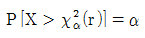
이며,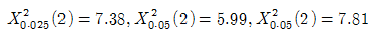
)- 지역에 따라 건립에 대한 찬성률에 차이가 있다.
- 지역에 따라 건립에 대한 찬성률에 차이가 없다.
- 표본의 크기가 지역에 따라 다르므로 말할 수 없다.
- 비교해야 하는 카이제곱 분포의 값이 주어지지 않아서 말할 수 없다.
(정답률: 46%)
87. 단순회귀분석에서 회귀직선의 기울기와 독립변수와 종속변수의 상관계수와의 관계에 대한 설명으로 옳은 것은?
- 회귀직선의 기울기가 양수이면 상관계수도 양수이다.
- 회귀직선의 기울기가 양수이면 상관계수는 음수이다.
- 회귀직선의 기울기가 음수이면 상관계수는 양수이다.
- 회귀직선의 기울기가 양수이면 공분산이 음수이다.
(정답률: 58%)
88. 다음 사례에 알맞은 검정방법은?
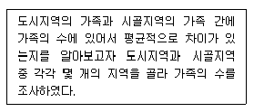
- 독립표본 t-검정
- 더빈 왓슨검정
- X2-검정
- F-검정
(정답률: 45%)
89. 정규분포 N(μ, 4σ2)을 따르는 모집단으로부터 크기가 2n인 임의표본을 추출한 경우 표본평균의 확률분포는?
- N(μ. σ2)
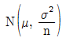
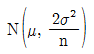
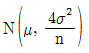
(정답률: 55%)
90. 다음은 독립변수가 k 인 경우의 중회귀모형이다.
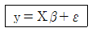
최소제곱법메 의한 회귀계수 벡터 β의 추정식 b는? (단,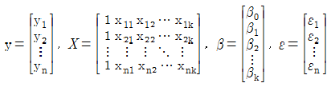
이며,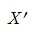
은 X의 변환행렬)- b=X-1y
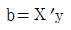
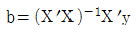
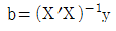
(정답률: 51%)
91. 어느 대학에서 2015학년도 1학기에 개설된 통계학 강좌에 A반 20명, B반 30명이 수강하고 있다. 중간고사에서 A반, B반의 평균은 각각 70점, 80점 이었다. 이번학기에 통계학을 수강하고 있는 학생 50명의 중간고사 평균은?
- 70점
- 74점
- 75점
- 76점
(정답률: 60%)
92. 자료의 분포에 대한 대푯값으로 평균(mean)대신 중앙값(median)을 사용하는 이유로 가장 적합한 것은?
- 자료의 크기가 큰 경우 평균은 계산이 어렵다.
- 편차의 총합은 항상 0이다.
- 평균은 음수가 나올 수 있다.
- 평균은 중앙값 보다 극단적인 관측 값에 의해 영향을 받는 정도가 심하다.
(정답률: 63%)
93. 피어슨 상관계수 값의 범위는?
- 0에서 1사이
- －1에서 0사이
- －1에서 1사이
- －∞에서 ＋∞사이
(정답률: 58%)
94. 2개의 독립변수를 사용하여 선형회귀분석을 한 결과 다음의 분산분석표를 얻었다. 총 관측수가 11이었다면 회귀제곱합의 값은?
- 400
- 800
- 1200
- 1600
(정답률: 57%)
95. 평균이 8이고 분산이 0.6인 정규모집단으로부터 10개의 표본을 임의로 추출하는 경우, 표본평균의 평균과 분산은?
- (0.8, 0.6)
- (0.8, 0.06)
- (8, 0.06)
- (8, 0.19)
(정답률: 50%)
96. 어느 자동차 정비업소에서 최근 1년 동안의 기록을 근거로 하루동안에 찾아오는 손님의 수에 대한 확률분포를 다음과 같이 얻었다. 이 확률분포에 근거할 때, 하루에 몇 명 정도의 손님이 이 정비업소를 찾아 올 것으로 기대되는가?
- 2.0
- 2.4
- 2.5
- 3.0
(정답률: 55%)
97. 상자 A에는 2개의 붉은 구슬과 3개의 흰 구슬이 있고, 상자 B에는 4개의 붉은 구슬과 5개의 흰 구슬이 있다. 상자 A에서 무작위로 하나를 꺼내 상자 B에 넣은 후 상자 B에서 무작위로 하나의 구슬을 꺼낼 때, 꺼낸 구슬이 붉은 구슬일 확률은?
- 0.08
- 0.44
- 0.38
- 0.20
(정답률: 48%)
98. 일원배치법의 기본가정으로 틀린 것은?
- 선형성
- 등분산성
- 독립성
- 불편성
(정답률: 42%)
99. 다음 자료에 대하여 를 독립변수로 를 종속변수로 하여 선형회귀분석을 하고자 한다. 자료를 요약한 값을 이용하여 추정회귀직선의 기울기와 절편을 구하면? (단, )
- 기울기＝0.77, 절편＝3.92
- 기울기＝0.77, 절편＝1.80
- 기울기＝1.30, 절편＝3.92
- 기울기＝1.30, 절편＝1.80
(정답률: 43%)
100. 다음 표는 완전 확률화 계획법의 분산분석표에서 자유도의 값을 나타내고 있다. 반복수가 일정하다고 한다면 처리수와 반복수는 얼마인가?
- 처리수 5, 반복수 7
- 처리수 5, 반복수 8
- 처리수 6, 반복수 7
- 처리수 6, 반복수 8
(정답률: 41%)